Get data
#libraries
if (!require(skimr)) install.packages('skimr')
if (!require(lubridate)) install.packages('lubridate')
if (!requireNamespace("devtools")) {
install.packages("devtools")
}
if (!require(easystats)) devtools::install_github("easystats/easystats")
# Attaching packages (red = needs update)
✔ insight 0.13.1.1 ✔ bayestestR 0.8.3.1
✔ performance 0.7.0.1 ✔ parameters 0.12.0.1
✔ see 0.6.2.1 ⚠ effectsize 0.4.3.1
✔ correlation 0.6.0.1 ✔ modelbased 0.5.9
✔ report 0.2.0
Warnings or errors in CRAN checks for package(s) 'insight', 'bayestestR', 'parameters', 'effectsize', 'modelbased', 'correlation'.
Restart the R-Session and update packages in red with 'easystats::easystats_update()'.if (!require(ggthemes)) install.packages('ggthemes')
if (!require(pmdplyr)) install.packages("pmdplyr")
if (!require(kableExtra)) install.packages("kableExtra")
# this should be part of easystats but in case not:
if (!require(report)) install.packages('report')
if (!require(brms)) install.packages('brms')
if (!require(lme4)) install.packages('lme4')
if (!require(table1)) install.packages('table1')
if (!require(modelsummary)) install.packages("modelsummary")
if (!require(naniar)) install.packages("naniar")
if (!require(ggraph)) install.packages("ggraph")
if (!require(gtsummary)) install.packages("gtsummary")
# load tidyverse
library("tidyverse")
# theme set
theme_set(theme_classic())
# uncomment below and run this code
# easystats::install_easystats_latest()
nz_0 <- readr::read_csv2(url("https://raw.githubusercontent.com/go-bayes/psych-447/main/data/nz/nz.csv"))
# take all characters and make them factors
# also get rid of duplicate rows
# Note the convention of renaming dataframe when creating a new one:
# ` nz <-nz_0 %>%... `
f<-c("None Of The Time","A Little Of The Time","Some Of The Time", "Most Of The Time", "All Of The Time")
nz <-nz_0 %>%
dplyr::mutate_if(is.character, factor) %>%
select(-c(SWB.Kessler01,SWB.Kessler02,SWB.Kessler03,SWB.Kessler04,SWB.Kessler05, SWB.Kessler06))%>%
dplyr::mutate(Wave = as.factor(Wave))%>%
mutate(FeelHopeless = forcats::fct_relevel(FeelHopeless,f))%>%
mutate(FeelDepressed = forcats::fct_relevel(FeelDepressed,f))%>%
mutate(FeelRestless = forcats::fct_relevel(FeelRestless,f))%>%
mutate(EverythingIsEffort = forcats::fct_relevel(EverythingIsEffort,f))%>%
mutate(FeelWorthless = forcats::fct_relevel(FeelWorthless,f))%>%
mutate(FeelNervous = forcats::fct_relevel(FeelNervous,f))
# not used
# nz <- haven::zap_formats(nz)
# nz <- haven::zap_label(nz)
# nz <- haven::zap_widths(nz)
# nz <- haven::zap_labels(nz)
Preamble
One of the advantages of R is that allows us to create highly effective workflows. Today, we’ll reinforce and extend the workflow skills that you’ve started to develop in previous weeks. Below we’ll be working with the nz dataset, which is a reduced, truncated, and jittered version of waves 10 and 11 of the New Zealand Attitudes and Values Study. This dataset is for teaching only, if you’d like to learn more about the study to which it belongs, go here or here.
Data carpentry continued
Different methods for selecting columns
Suppose we want to select all variables that start with Believe. We can do this in a number of ways.
First there is explicit selection:
# explicit selection
nz %>%
select("Believe.God", "Believe.Spirit")%>%
glimpse()
Rows: 4,136
Columns: 2
$ Believe.God <fct> Not Believe God, Not Believe God, Believe God…
$ Believe.Spirit <fct> Not Believe Spirit, Not Believe Spirit, Belie…We can select all instances of a column that start with a certain name. For this you by using starts_with
nz %>%
select(starts_with("Believe"))%>%
glimpse()
Rows: 4,136
Columns: 2
$ Believe.God <fct> Not Believe God, Not Believe God, Believe God…
$ Believe.Spirit <fct> Not Believe Spirit, Not Believe Spirit, Belie…By the same token, we can select all instances of a variable that ends with a certain string by using ends_with
Rows: 4,136
Columns: 2
$ NZ.Social.Conditions <dbl> 4, 6, 3, 0, 4, 3, 4, 5, 4, 6, 5, 5, 6…
$ NZ.Business.Conditions <dbl> 8, 6, 4, 7, 5, 3, 4, 6, 6, 6, 5, 6, 5…We can cast a broader net and select all instances of a variable within a string by using contains
Rows: 4,136
Columns: 3
$ Religion.Believe.Cats <dbl> 4, 4, 1, 1, 1, 1, 4, NA, 3, 3, 4, 4, 2…
$ Believe.God <fct> Not Believe God, Not Believe God, Beli…
$ Believe.Spirit <fct> Not Believe Spirit, Not Believe Spirit…As we can see, the net that we cast using contains was too broad. We don’t want the Religion.Believe.Cats.
In R, you can programme your way out of this corner as follows:
Rows: 4,136
Columns: 2
$ Believe.God <fct> Not Believe God, Not Believe God, Believe God…
$ Believe.Spirit <fct> Not Believe Spirit, Not Believe Spirit, Belie…However, that’s inelegant; better to drop contains altogether and revert to another method.
Re-leveling a factor
Death, taxes, and factors are consequence of living. Let’s look at the BigDoms variable in the nz, which is a factor identifying large religious denominations
.
Buddhist Christian Muslim Not_Rel TheOthers <NA>
37 1176 13 2697 136 77 Note the use of ifany to print the NAs in this table. It’s almost never sensible to ignore missing values!
Suppose we wanted to make “Not Rel” our base category for this factor. We could do so as follows:
## suppose we want "Not_Rel" as the base category, and rearrange the other levels
library(forcats) # this is part of the tidyverse package.
nz1<-nz %>%
dplyr::select(BigDoms, KESSLER6sum) %>%
dplyr::mutate(BigDoms =
forcats::fct_relevel(BigDoms, c("Not_Rel","Christian","Buddhist","Muslim","TheOthers")))
#inspect data
nz1%>%
group_by(BigDoms)%>%
count()
# A tibble: 6 x 2
# Groups: BigDoms [6]
BigDoms n
<fct> <int>
1 Not_Rel 2697
2 Christian 1176
3 Buddhist 37
4 Muslim 13
5 TheOthers 136
6 <NA> 77The reordering makes for a more sensible model because the base category is now Not_Rel or not-religious. Hence comparisons are to this category.
m0<- glm( KESSLER6sum ~ BigDoms, data = nz1 )
parameters::model_parameters(m0) %>%
print_html(caption = "Model of Distress by Denomination with the base category is `No Religion'")
| Model of Distress by Denomination with the base category is `No Religion' | |||||
|---|---|---|---|---|---|
| Parameter | Coefficient | SE | 95% CI | t(4026) | p |
| (Intercept) | 5.17 | 0.08 | (5.02, 5.32) | 67.55 | < .001 |
| BigDoms (Christian) | -0.25 | 0.14 | (-0.53, 0.02) | -1.82 | 0.069 |
| BigDoms (Buddhist) | -0.32 | 0.66 | (-1.60, 0.97) | -0.48 | 0.631 |
| BigDoms (Muslim) | -0.25 | 1.10 | (-2.41, 1.91) | -0.23 | 0.820 |
| BigDoms (TheOthers) | 0.82 | 0.35 | (0.13, 1.51) | 2.33 | 0.020 |
We can see the results better using a coefficient graph, which visualises the information presented in the table.
plot(parameters::model_parameters(m0) ) + labs(title = "Comparison of Religious groups to secular people",
subtitle = "Christians are a little more chilled out, \n Other denoms are less chilled out")
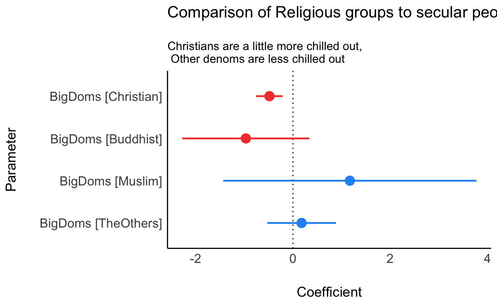
The base category is the comparison class. Should we infer that “The Others” denomination causes greater distress? We’ll return to this, and related questions, in the upcoming weeks. For now let’s just leave it at “probably not.”
Creating factors from numerical indicators
It is almost never a good idea to transform continuous data into categorical data. However, occassionally, you will need to do so. For example, we might want to break the KESSLER6 distress indicator into its medically diagnostic components for “mild distress,” “moderate distress,” and “severe distress.” We may achieve this task using the cut function as follows:
nz <-nz %>%
dplyr::mutate(k6cats = cut(
KESSLER6sum,
breaks = c(-Inf, 5, 13, Inf), # create Kessler 6 diagnostic categories
labels = c("Low Distress", "Moderate Distress", "Serious Distress"),
right = TRUE
))
table(nz$k6cats, useNA = "ifany")
Low Distress Moderate Distress Serious Distress
2560 1372 172
<NA>
32 Using ifelse to create factors
I prefer to maintain control over how I am making the categories. For example, in the previous example, I didn’t remember whether cut includes a value to the left or to the right. I had to look this up. However, I can use ifelse function to explicitly create the relevant categories:
nz %>%
dplyr::mutate(k6cats1 = as.factor(ifelse(
KESSLER6sum <= 5,
"Low Distress",
ifelse(KESSLER6sum <= 13, "Moderate Distress", "Serious Distress")
))) %>%
group_by(k6cats1) %>%
count()
# A tibble: 4 x 2
# Groups: k6cats1 [4]
k6cats1 n
<fct> <int>
1 Low Distress 2560
2 Moderate Distress 1372
3 Serious Distress 172
4 <NA> 32#check this is the same as the previous method
nz %>%
group_by(k6cats) %>%
count()
# A tibble: 4 x 2
# Groups: k6cats [4]
k6cats n
<fct> <int>
1 Low Distress 2560
2 Moderate Distress 1372
3 Serious Distress 172
4 <NA> 32We can see that this method returns the same values as the cut method above.
Transformations of indicators: scaling, centering, and logs
Throughout this course, we’ll be standardising and centering indicators. Occasionally, we’ll need to perform log transformations. You’ll need to know how to do this.
Suppose we want to standardise the Relid indicator. This will transform the Relid indicator into standard deviation units. In later seminars, we’ll explain why this transformation is useful. For now, this is how you do it:
nz1 <- nz %>%
select(Relid)%>%
mutate(religousid_s = scale(Relid, scale = TRUE, center = TRUE))
head(nz1)
# A tibble: 6 x 2
Relid religousid_s[,1]
<dbl> <dbl>
1 0 -0.624
2 0 -0.624
3 6 1.71
4 6 1.71
5 3 0.545
6 3 0.545What happened? The variable name for our standardised variable looks weird: religious_s[ ,1]
This isn’t a worry. We use the variable as we would any other and all is fine.1
| religousid_s | |||
|---|---|---|---|
| Predictors | Estimates | CI | p |
| (Intercept) | -0.00 | -0.03 – 0.03 | 1.000 |
| Observations | 3993 | ||
| R2 / R2 adjusted | 0.000 / 0.000 | ||
Pro tip 1:
Transform your data as the last step in your pipe workflow.
This is because if you filter cases, you’ll end up with a variable that isn’t measured standard deviations units
nza <- nz %>%
select(Relid, BigDoms)%>%
mutate(religousid_s = scale(Relid, scale = TRUE, center = TRUE))
nzb <- nz %>%
select(Relid, BigDoms)%>%
mutate(religousid_s = scale(Relid, scale = TRUE, center = TRUE)) %>%
filter(BigDoms !="Not_Rel")
# compare
summary(nza$religousid_s)
V1
Min. :-0.6237
1st Qu.:-0.6237
Median :-0.6237
Mean : 0.0000
3rd Qu.: 0.5453
Max. : 2.1040
NA's :143 # with
summary(nzb$religousid_s)
V1
Min. :-0.234
1st Qu.: 0.935
Median : 1.325
Mean : 1.298
3rd Qu.: 2.104
Max. : 2.104
NA's :66 When we filter last, the mean value in the dataset is 1.3 – everything has changed!
nz1 <- nz1 %>%
select(Relid)%>%
mutate(religousid_s = scale(Relid, scale = TRUE, center = TRUE))
head(nz1)
# A tibble: 6 x 2
Relid religousid_s[,1]
<dbl> <dbl>
1 0 -0.624
2 0 -0.624
3 6 1.71
4 6 1.71
5 3 0.545
6 3 0.545or simply:
To center a variable we set scale = FALSE, center = TRUE
nz1 <- nz %>%
mutate(religousid_c = scale(Relid, scale = FALSE, center = TRUE))
# inspect new indicator
nz1%>%
select(Relid,religousid_c)%>%
glimpse()
Rows: 4,136
Columns: 2
$ Relid <dbl> 0, 0, 6, 6, 3, 3, NA, NA, 0, 0, 0, 0, 1, 1, 3, …
$ religousid_c <dbl[,1]> <matrix[23 x 1]>We use the log transformation for extreme values. We can create a new indicator by combining mutate and log as follows:
nz1 <- nz %>%
mutate(charitydonate_log = log(CharityDonate + 1))
# inspect new indicator
nz1 %>%
select(CharityDonate,charitydonate_log)%>%
glimpse()
Rows: 4,136
Columns: 2
$ CharityDonate <dbl> 1000, 0, 500, 500, 50, 20, 20, 100, 400, 3…
$ charitydonate_log <dbl> 6.908755, 0.000000, 6.216606, 6.216606, 3.…Note that we have to add \[+1\] to the log transformation, as you will recall that the log of zero is undefined. You cannot obtain zero by raising it to the power of another number.
Create and work with dates a date
We can analyze dates, for example, for how many minutes were data collected?
date
Min. :2018-01-24
1st Qu.:2018-08-08
Median :2019-10-03
Mean :2019-05-15
3rd Qu.:2019-12-05
Max. :2020-10-10 int<-lubridate::interval(ymd("2018-01-02"), ymd("2020-10-06"))
#time in years
time_length(int, "year")
[1] 2.759563#time in minutes
time_length(int, "minutes")
[1] 1451520Fun! So much so you have some homework that will work with dates.
Create a timeline
Here we’re going to graph the number of responses each day for the years of data collection.
library(lubridate)
library(ggplot2)
datrep <- nz %>%
count(day = floor_date(date, "day"))%>%
dplyr::mutate(Year = factor(ifelse(
day < "2018-01-01",
2017,
ifelse(day < "2019-01-01", 2018,
ifelse(day < "2020-01-01", 2019, 2020))
))) %>%
arrange(day)
# create the graph
ggplot(datrep, aes(day, n)) +
geom_col(aes(fill = Year)) +
scale_x_date(date_labels = "%b/%Y") +
xlab("Days") + ylab("Count of Responses") +
ggtitle("Our Dataset's Daily Counts") +
theme_classic() +
scale_fill_viridis_d()
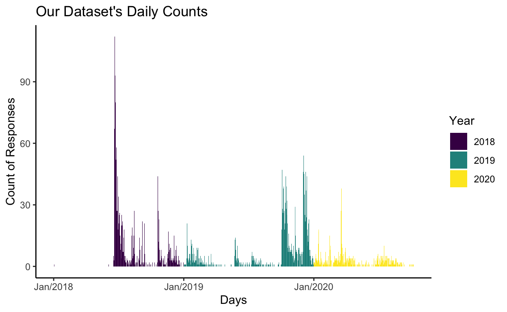
Note that we can use the datrep dataframe that we created to explore aspects of data collection. For example we can arrange the dataset by day in descending order of participants sampled:
datrep%>%
arrange(desc(n))
# A tibble: 623 x 3
day n Year
<date> <int> <fct>
1 2018-06-21 121 2018
2 2018-06-22 104 2018
3 2018-06-20 88 2018
4 2018-06-24 80 2018
5 2019-12-03 67 2019
6 2018-06-23 65 2018
7 2018-06-25 62 2018
8 2019-12-05 46 2019
9 2018-10-20 45 2018
10 2018-06-26 44 2018
# … with 613 more rowsTake not of that code, you might need it for your workbook.
What might we do with dates? Well we might ask, were there any inherently stressful days?
To see this, we can take average stress levels by day, and then see where the high average stress days fall.
tn<-nz %>%
select(date,KESSLER6sum,Id) %>%
group_by(date)%>%
summarise(
av_distress = mean(KESSLER6sum, na.rm = TRUE),
n = n_distinct(Id)
) %>%
arrange(desc(av_distress))%>%
glimpse()
Rows: 623
Columns: 3
$ date <date> 2020-05-10, 2020-05-23, 2020-04-22, 2020-04-26,…
$ av_distress <dbl> 19.00000, 19.00000, 17.00000, 15.00000, 15.00000…
$ n <int> 1, 1, 1, 1, 1, 1, 1, 1, 2, 3, 3, 2, 3, 1, 1, 1, …Graphing the densities reveals the following
tn%>%
ggplot(., aes(date, av_distress)) +
geom_col(aes(fill =(n))) + scale_x_date(date_labels = "%b/%Y") + theme_classic() + scale_fill_viridis_c()
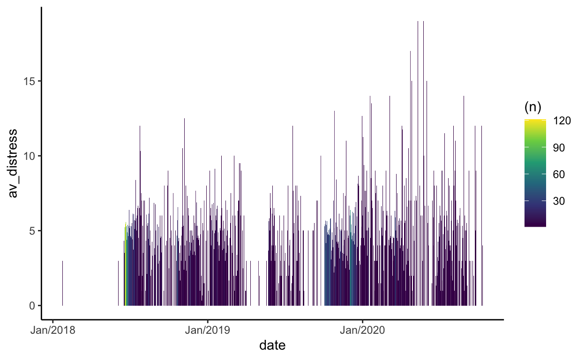
Clearly the “stressful days” are an artifact of days with low numbers of participant respondents.
Let’s see whether there are any stressful days of the week. We do this by creating a weekday variable using the wday function in the lubridate package. Let’s graph our results using a pipe %>% workflow:
nz %>%
select(Id, date, KESSLER6sum) %>%
mutate(weekdays = wday(date, label = TRUE)) %>%
group_by(weekdays) %>%
summarise(
mn_k6 = mean(KESSLER6sum, na.rm = TRUE),
sd_k6 = sd(KESSLER6sum, na.rm = TRUE),
n_k6w = n()
) %>%
mutate(
se_k6 = sd_k6 / sqrt(n_k6w),
lw_ci = mn_k6 - qt(1 - (0.05 / 2), n_k6w - 1) * se_k6,
up_ci = mn_k6 + qt(1 - (0.05 / 2), n_k6w - 1) * se_k6
) %>%
ggplot(., aes(x = weekdays, y = mn_k6, colour = mn_k6)) +
geom_errorbar(aes(ymin = lw_ci, ymax = up_ci), width = .1) +
geom_point(size = 3) +
scale_y_continuous(limits = c(0,7)) +
theme_classic() + scale_fill_viridis_d()
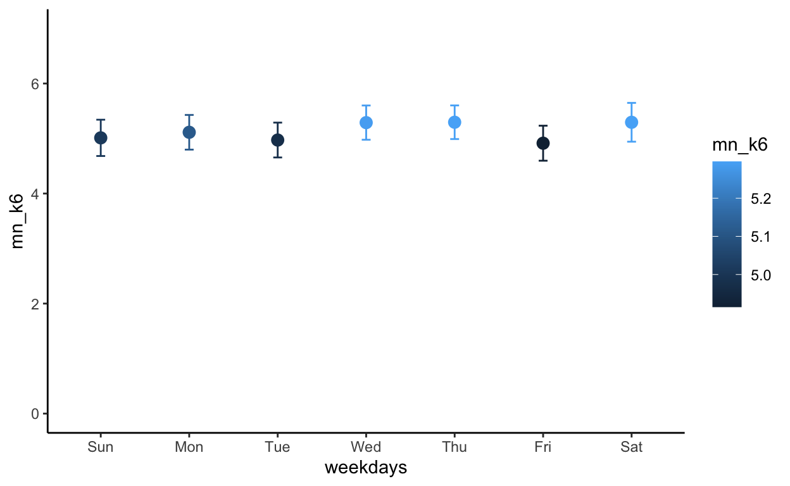
Despite the variability over the two years of data collection, the bars of the graph overlap: we don’t find differences in distress by days.
“Ok Boomer,” you ask, “what if we were to calculate distress by generational cohorts?”
My reply, I’m not a boomer, I’m a GenX-er. I’m keen to check it out:
nz$hour
NULLnz %>%
select(GenCohort, KESSLER6sum) %>%
group_by(GenCohort) %>%
summarise(
mn_k6 = mean(KESSLER6sum, na.rm = TRUE),
sd_k6 = sd(KESSLER6sum, na.rm = TRUE),
n_k6w = n()
) %>%
mutate(
se_k6 = sd_k6 / sqrt(n_k6w),
lw_ci = mn_k6 - qt(1 - (0.05 / 2), n_k6w - 1) * se_k6,
up_ci = mn_k6 + qt(1 - (0.05 / 2), n_k6w - 1) * se_k6
) %>%
ggplot(., aes(x = GenCohort, y = mn_k6, colour = GenCohort)) +
geom_errorbar(aes(ymin = lw_ci, ymax = up_ci), width = .1) +
geom_point(size = 3) +
scale_y_continuous(limits = c(0, 7)) +
theme_classic() +
geom_hline(yintercept = 5,
colour = "red",
linetype = "dashed") +
scale_y_continuous(limits = c(0, 10)) +
theme(
legend.text = element_text(size = 6),
legend.title = element_text(size = 8),
axis.text.x = element_blank()
) +
xlab("Birth Generation Cohort") +
ylab("Kessler 6 Distress") +
labs(title = "Average Distress by Birth Cohort",
subtitle = "Red line indicates clinically moderate distress threshold") +
scale_colour_viridis_d()
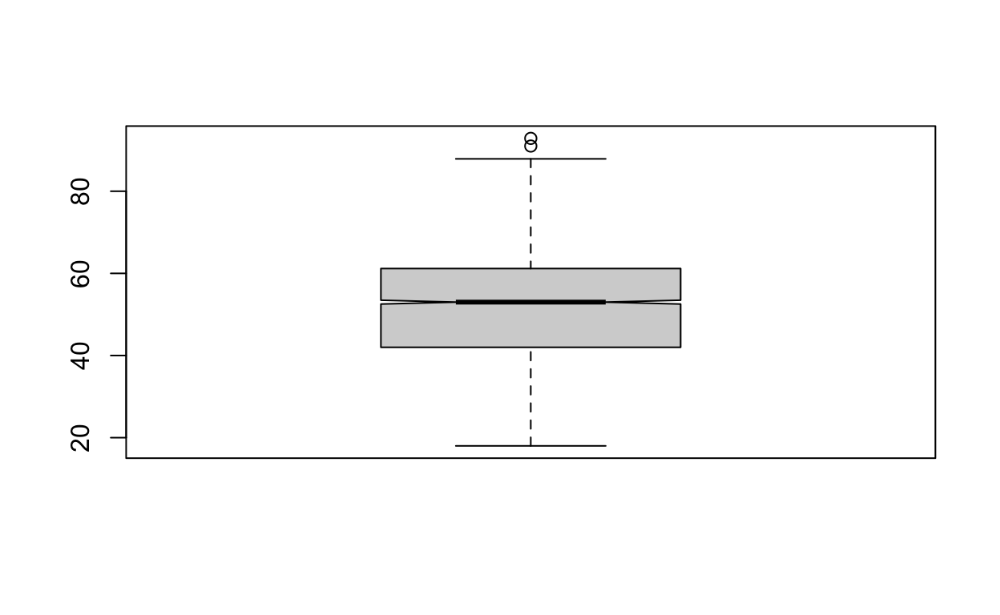
Later, we’ll ask why you’re so stressed out.
Slice
Dplyr’s slice function can be handy. Say we only want the first four rows
datrep%>%
arrange(desc(n)) %>%
slice(1:4)
# A tibble: 4 x 3
day n Year
<date> <int> <fct>
1 2018-06-21 121 2018
2 2018-06-22 104 2018
3 2018-06-20 88 2018
4 2018-06-24 80 2018 Say we only want the 1st row, the 3rd row, and the 20th row
# A tibble: 3 x 3
day n Year
<date> <int> <fct>
1 2018-06-21 121 2018
2 2018-06-20 88 2018
3 2019-12-12 36 2019 Lags and leads using timeseries data
Create a difference variable for change in Kessler 6
library("pmdplyr")
df <-nz %>%
dplyr::filter(!is.na(KESSLER6sum))%>%
mutate(wave = as.numeric(Wave))%>%
mutate(lag_k6 = tlag(KESSLER6sum,
.i = Id, # id variable
.t = wave # time series variable, needs to be numeric
))%>%
mutate(diff_k6 = lag_k6 - KESSLER6sum) %>%
select(Id,Wave,KESSLER6sum,diff_k6,Emp.JobSecure,Employed)%>%
arrange(desc(diff_k6))
What to do with this new variable. Well, we might explore whether employment security relates to distress change:
df %>%
filter(Wave == 2019) %>%
mutate(employed_employsecurity = as.factor(ifelse(Employed ==1, Emp.JobSecure,0)))%>%
ggplot(data = ., aes(x = diff_k6, fill = employed_employsecurity) )+
geom_histogram() +
xlab("Difference in K6 eleveation (cases above 5)") +
ylab("Counts of cases") +
labs(subtitle ="No clear relationship between unemployment insecurity and distress change")+
scale_fill_discrete(name="Employment Security 1-7") +
scale_fill_viridis_d() + theme_classic() +
theme(legend.position = "bottom")
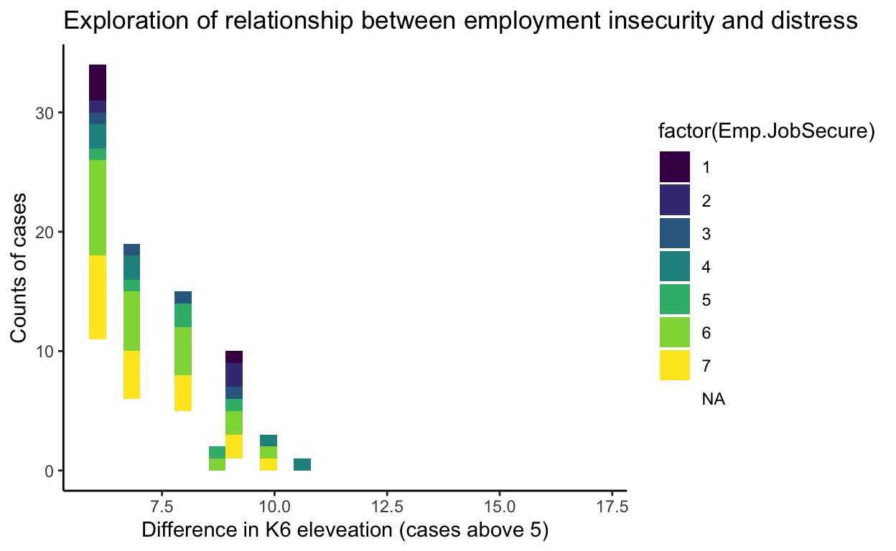
And remarkably we don’t see much evidence in the cross-sectional analysis.
# create data frame with new variable Zero is for the unemeployed.
dfnew <- df %>%
filter(Wave == 2019) %>%
mutate(employed_employsecurity = as.numeric(ifelse(Employed == 1, Emp.JobSecure, 0)))%>%
filter(!is.na(employed_employsecurity))
head(dfnew)
# A tibble: 6 x 7
Id Wave KESSLER6sum diff_k6 Emp.JobSecure Employed
<dbl> <fct> <dbl> <dbl> <dbl> <dbl>
1 1713 2019 1 20 4 1
2 564 2019 4 13 NA 0
3 1001 2019 0 12 4 1
4 517 2019 4 11 NA 0
5 610 2019 14 9 7 1
6 922 2019 5 9 7 1
# … with 1 more variable: employed_employsecurity <dbl># Graph
ggplot(dfnew, aes(y = diff_k6, employed_employsecurity)) +
geom_jitter(alpha = .2) +
geom_smooth(method = lm) +
xlab("employed_employsecurity") +
ylab("Kessler 6 distress jumps over 5") +
ggtitle("Jumps in distress change not related to employement insecurity") +
scale_fill_viridis_d() + theme_classic()
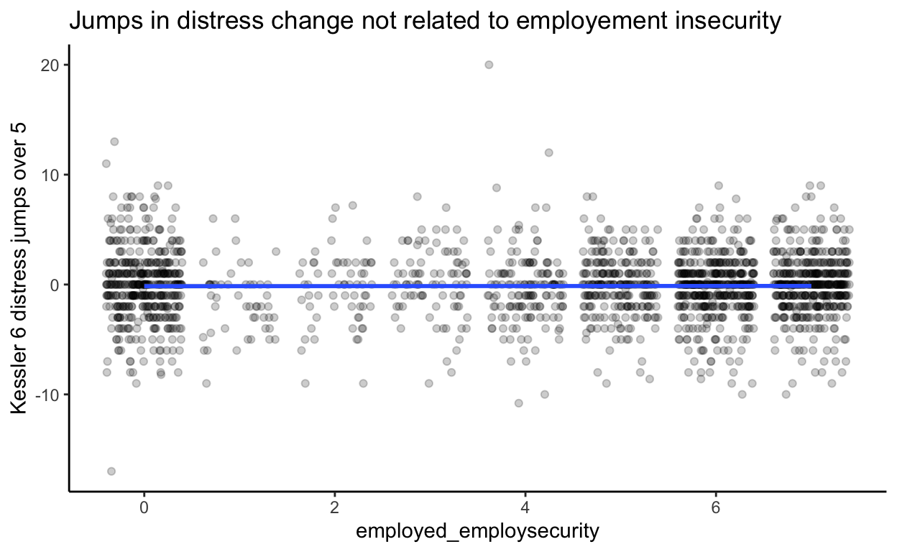
However, perhaps our indicator is misleading us. We can formally model the relationship between employment security and Kessler6 distress across two years
# create dataframe with the variables we need
dfnew2 <- df %>%
mutate(employed_employsecurity = as.numeric(ifelse(Employed == 1, Emp.JobSecure, 0))) %>%
filter(!is.na(employed_employsecurity)) %>%
dplyr::mutate(employsecurity_s = scale(employed_employsecurity))
# multi-level model
m00a<-lme4::lmer(KESSLER6sum ~ employsecurity_s * Wave + (1|Id), data = dfnew2)
plot(ggeffects::ggpredict(m00a, terms=c("employsecurity_s", "Wave")),
add.data = TRUE, jitter = 0.2, dot.alpha =.05) + geom_hline(yintercept = 5,
colour = "red",
linetype = "dashed") +
labs(title = "There is a relationship between employment security and Kessler6 distress")
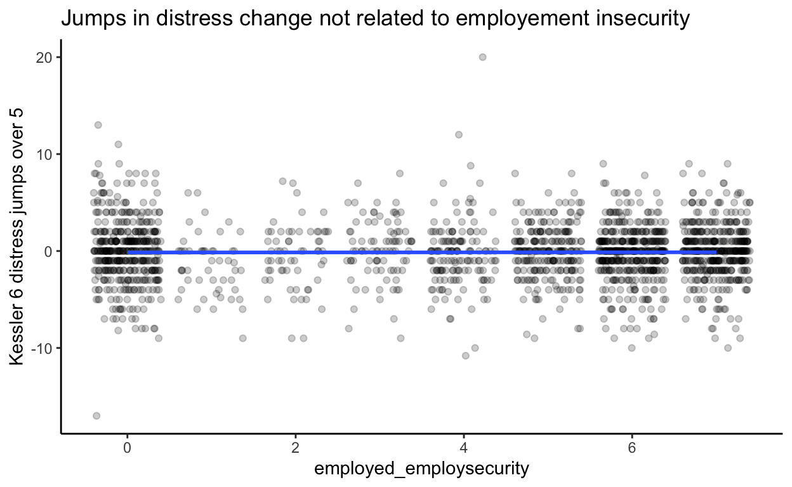
This suggests a stable negative relationship between employment security and (low) distress. So is there are causal relationship? Not necessarily. Again, we return to casual inference in the upcoming weeks. For now, we want to alert you to an important lesson:
Pro tip 2
Do not read too much into your descriptive analysis!
This is especially true when creating new variables. Just because you can make a variable doesn’t mean you should use it, or interpret it!
Put differently, our workflow will require much more than descriptive statistics.
Data summary
Summarise all your data
The skimr package
The skimmer package can be helpful in detecting problems. A drawback note that it is interpreting all factors as numbers).
For example. ( I won’t run the following code, you will do so for your homework).
However, I want to point out that skimr works with individual columns, and it accepts a tidy workflow.
| Name | Piped data |
| Number of rows | 4136 |
| Number of columns | 3 |
| _______________________ | |
| Column type frequency: | |
| numeric | 2 |
| ________________________ | |
| Group variables | Wave |
Variable type: numeric
| skim_variable | Wave | n_missing | complete_rate | mean | sd | p0 | p25 | p50 | p75 | p100 | hist |
|---|---|---|---|---|---|---|---|---|---|---|---|
| KESSLER6sum | 2018 | 15 | 0.99 | 5.07 | 3.93 | 0 | 2 | 4 | 7 | 23 | ▇▅▂▁▁ |
| KESSLER6sum | 2019 | 17 | 0.99 | 5.20 | 4.01 | 0 | 2 | 4 | 7 | 22 | ▇▅▂▁▁ |
| HLTH.SleepHours | 2018 | 97 | 0.95 | 6.93 | 1.13 | 3 | 6 | 7 | 8 | 12 | ▁▅▇▁▁ |
| HLTH.SleepHours | 2019 | 69 | 0.97 | 6.96 | 1.14 | 2 | 6 | 7 | 8 | 12 | ▁▃▇▁▁ |
Table1 & other canned table packages
In earlier seminars, we encountered the table1 package, which makes really great html tables:
library(table1)
table1::table1(~Age +
GenCohort +
Male +
Edu +
Pol.Orient +
Relid +
BigDoms | Wave, data = nz,
overall = FALSE)
| 2018 (N=2068) |
2019 (N=2068) |
|
|---|---|---|
| Age | ||
| Mean (SD) | 50.1 (13.5) | 51.8 (13.4) |
| Median [Min, Max] | 52.0 [18.0, 90.0] | 54.1 [19.6, 91.1] |
| GenCohort | ||
| Gen Boombers: born >= 1946 & b.< 1961 | 693 (33.5%) | 693 (33.5%) |
| Gen_Silent: born< 1946 | 50 (2.4%) | 50 (2.4%) |
| GenX: born >=1961 & b.< 1980 | 886 (42.8%) | 886 (42.8%) |
| GenY: born >=1980 & b.< 1996 | 387 (18.7%) | 387 (18.7%) |
| GenZ: born >= 1996 | 52 (2.5%) | 52 (2.5%) |
| Male | ||
| Male | 772 (37.3%) | 772 (37.3%) |
| Not_Male | 1290 (62.4%) | 1289 (62.3%) |
| Missing | 6 (0.3%) | 7 (0.3%) |
| Edu | ||
| Mean (SD) | 5.39 (2.78) | 5.64 (2.72) |
| Median [Min, Max] | 6.00 [0, 10.0] | 7.00 [0, 10.0] |
| Missing | 80 (3.9%) | 65 (3.1%) |
| Pol.Orient | ||
| Mean (SD) | 3.53 (1.39) | 3.57 (1.37) |
| Median [Min, Max] | 4.00 [1.00, 7.00] | 4.00 [1.00, 7.00] |
| Missing | 116 (5.6%) | 63 (3.0%) |
| Relid | ||
| Mean (SD) | 1.67 (2.57) | 1.53 (2.56) |
| Median [Min, Max] | 0 [0, 7.00] | 0 [0, 7.00] |
| Missing | 44 (2.1%) | 99 (4.8%) |
| BigDoms | ||
| Buddhist | 18 (0.9%) | 19 (0.9%) |
| Christian | 619 (29.9%) | 557 (26.9%) |
| Muslim | 7 (0.3%) | 6 (0.3%) |
| Not_Rel | 1322 (63.9%) | 1375 (66.5%) |
| TheOthers | 70 (3.4%) | 66 (3.2%) |
| Missing | 32 (1.5%) | 45 (2.2%) |
Unfortunately, the table1 package only prints html tables.
For publications, I might use the modelsummary package
library("modelsummary")
nnz<-nz %>%
dplyr::select(Age,
Male,
BigDoms,
Edu,
GenCohort,
Relid,
Pol.Orient,
Wave)
modelsummary::datasummary_balance( ~ Wave, data=nnz, dinm=FALSE, output = 'table.tex')
I’ll put the \(LaTeX\) output into my document because I generally prefer to write in \(LaTeX\)
However if you want to print inline, you can simply use:
library("modelsummary")
nnz<-nz %>%
dplyr::select(Age,
Male,
BigDoms,
Edu,
GenCohort,
Relid,
Pol.Orient,
Wave)
modelsummary::datasummary_balance( ~ Wave, data=nnz, dinm=FALSE)
| Mean | Std. Dev. | Mean | Std. Dev. | ||
|---|---|---|---|---|---|
| Age | 50.1 | 13.5 | 51.8 | 13.4 | |
| Edu | 5.4 | 2.8 | 5.6 | 2.7 | |
| Relid | 1.7 | 2.6 | 1.5 | 2.6 | |
| Pol.Orient | 3.5 | 1.4 | 3.6 | 1.4 | |
| N | % | N | % | ||
| Male | Male | 772 | 37.3 | 772 | 37.3 |
| Not_Male | 1290 | 62.4 | 1289 | 62.3 | |
| BigDoms | Buddhist | 18 | 0.9 | 19 | 0.9 |
| Christian | 619 | 29.9 | 557 | 26.9 | |
| Muslim | 7 | 0.3 | 6 | 0.3 | |
| Not_Rel | 1322 | 63.9 | 1375 | 66.5 | |
| TheOthers | 70 | 3.4 | 66 | 3.2 | |
| GenCohort | Gen Boombers: born >= 1946 & b.< 1961 | 693 | 33.5 | 693 | 33.5 |
| Gen_Silent: born< 1946 | 50 | 2.4 | 50 | 2.4 | |
| GenX: born >=1961 & b.< 1980 | 886 | 42.8 | 886 | 42.8 | |
| GenY: born >=1980 & b.< 1996 | 387 | 18.7 | 387 | 18.7 | |
| GenZ: born >= 1996 | 52 | 2.5 | 52 | 2.5 |
Create a table using pipe functions
Above we saw how to create a clunky table using table(x). However, R has lots of functionality to enable better.
library(kableExtra)
nz %>%
select(k6cats, Wave) %>%
filter(!is.na(k6cats))%>%
group_by( Wave, k6cats) %>%
summarise(n = n())%>%
kbl(caption = "Distress by Year") %>%
kable_classic_2(c("striped", "hover"), full_width = TRUE)%>%
collapse_rows()
| Wave | k6cats | n |
|---|---|---|
| 2018 | Low Distress | 1296 |
| Moderate Distress | 673 | |
| Serious Distress | 84 | |
| 2019 | Low Distress | 1264 |
| Moderate Distress | 699 | |
| Serious Distress | 88 |
Note that we can use the pivot_wider function to spread the dataframe to enable a table that is easier to interpret.
Credit where credit is due: I just learned about pivot_wider from Johannes and Thorven. I’m keen to get pivot_longer and pivot_wider into my vocabulary, and to do more things, like this:
nz %>%
select(k6cats, Wave) %>%
filter(!is.na(k6cats))%>%
group_by( Wave, k6cats) %>%
summarise(n = n())%>%
pivot_wider(names_from = Wave, values_from = n) %>%
kbl(caption = "Distress counts by year") %>%
kable_classic_2(c("striped", "hover"), full_width = TRUE)
| k6cats | 2018 | 2019 |
|---|---|---|
| Low Distress | 1296 | 1264 |
| Moderate Distress | 673 | 699 |
| Serious Distress | 84 | 88 |
Nice!
Bar graphs
For categorical data, in place of tables we can use bar graphs
Here’s the table:
table(nz$BigDoms)
Buddhist Christian Muslim Not_Rel TheOthers
37 1176 13 2697 136 Here’s the bar graph:
Note that we can re-order the factor levels to produce a nicer output, using fct_infreq
ggplot(nz) +
geom_bar(mapping = aes(x = fct_infreq(BigDoms)) )
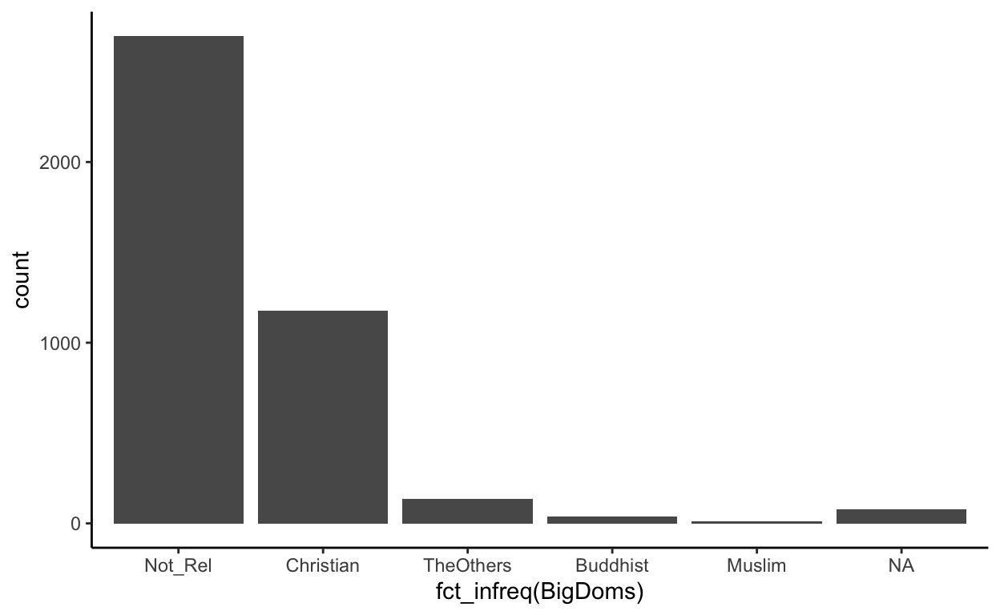
Missing data graphs
What do you notice about the patterns of missingness in this graph?
Here, we find all the problem cases:
gg_miss_upset(nz)
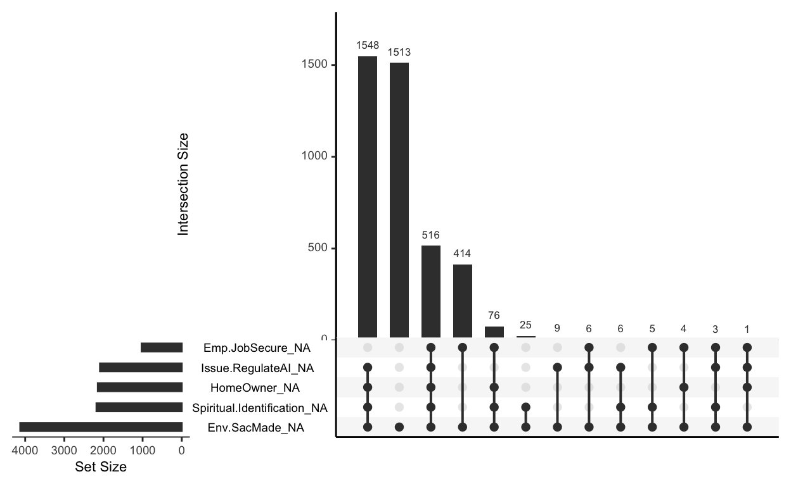
What explains these feature of missingess?
Boxplots
A box plot provides visual information for the following statistics:
- Minimum – (0p) min outlier
- Maximum – (100p) max outlier
- Median – (50th p)
- First Quartile (Q1 or 25p)
- Third Quartile (Q3 or 75p)
- Interquartile range (IQR), whcih is the distance between Q1 and Q3
- Optional: the notch displays a confidence interval around the median. This is +/- 1.58 X IQR/sqrt(n). We use notches to compare differences between groups; overlap implies uncertainty about whether the medians differ.
There’s a simple explanation here
We can use base R to investigate differences in distress among big denominations:
# using base R
boxplot(KESSLER6sum ~ BigDoms, data = nz, notch = TRUE, col = c("cadetblue1","orange","red","darkblue","brown"))
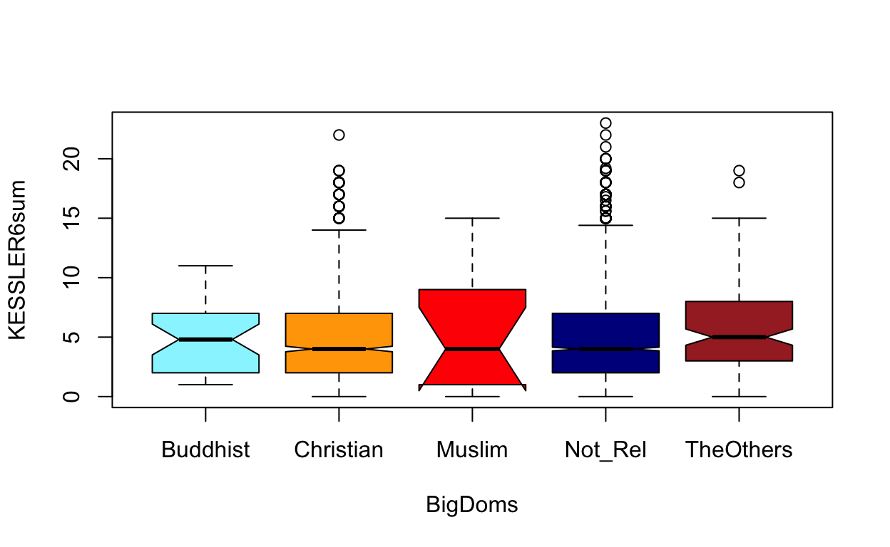
Here’s a ggplot boxplot:
ggplot(data = nz, aes(x = KESSLER6sum, y = BigDoms, fill = BigDoms)) +
geom_boxplot(notch=TRUE) + scale_fill_viridis_d() +
ggtitle("If the notches don't overlap, there's likely a difference") +
geom_jitter(alpha = .05)
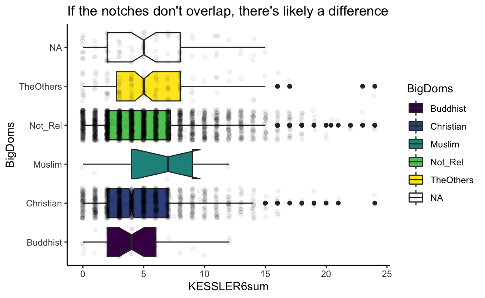
Here’s a ggplot2 boxplot with points overlaid, and jittered. This allows us to se the differences in sample sizes
ggplot(data = nz, aes(x = KESSLER6sum, y = BigDoms, fill = BigDoms)) +
geom_boxplot(notch=TRUE) + scale_fill_viridis_d() +
ggtitle("If the notches don't overlap, there's likely a difference") +
geom_jitter(alpha = .07)
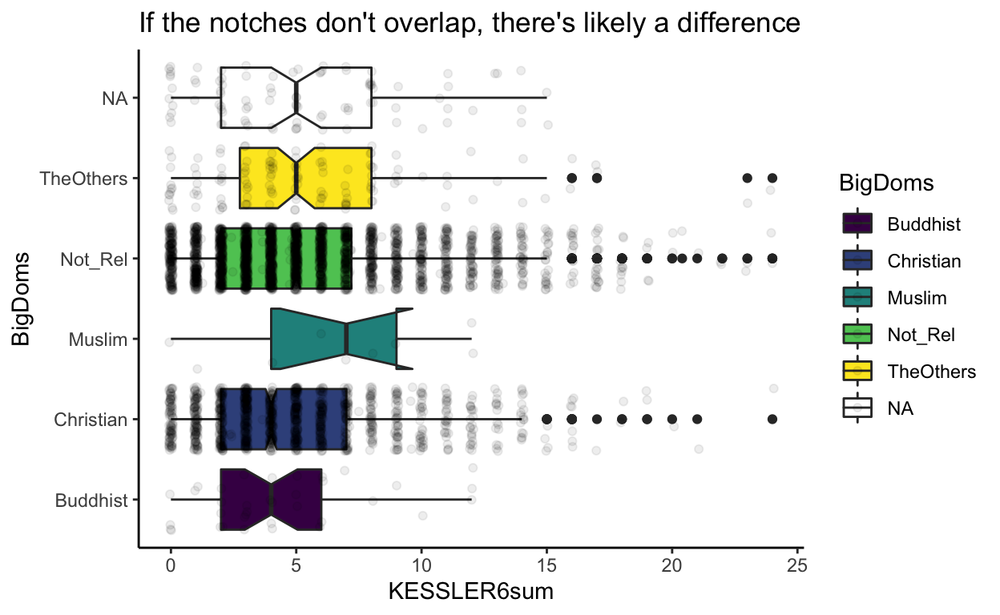
We could look at differences by wave:
ggplot(data = nz, aes(x = KESSLER6sum, y = BigDoms, fill = BigDoms)) +
geom_boxplot(notch=TRUE) + scale_fill_viridis_d() +
geom_jitter(alpha = .07) +
facet_grid(Wave ~ .) +
ggtitle("If the notches don't overlap, there's likely a difference")
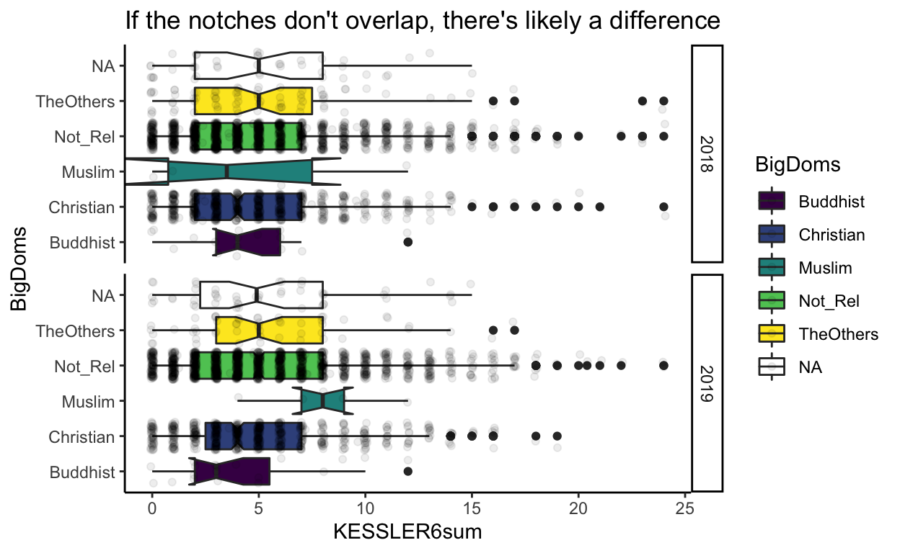
Correlation graphs
Johannes will describe a method for making a correlation plot. Here is another method.
bzsec<-nz%>%
select(
Your.Future.Security,
Standard.Living,
NZ.Economic.Situation,
NZ.Business.Conditions,
Emp.JobSecure,
CharityDonate,
Id
) %>%
mutate_all(., as.numeric) %>% #make numeric
mutate(Id = as.factor(Id),
CharityDonate = log(CharityDonate + 1))# make Id a factor for the
# make a correlation plot using the "correlation" package from easystates
library(correlation)
p1<-bzsec %>%
correlation(partial = FALSE, multilevel = TRUE ) %>%
plot()
Print summary
bzsec %>%
correlation(partial = FALSE, multilevel = TRUE ) %>%
summary()
Parameter | CharityDonate | Emp.JobSecure | NZ.Business.Conditions | NZ.Economic.Situation | Standard.Living
-------------------------------------------------------------------------------------------------------------------------
Your.Future.Security | 0.10*** | 0.22*** | 0.47*** | 0.32*** | 0.38***
Standard.Living | 0.09*** | 0.16*** | 0.26*** | 0.30*** |
NZ.Economic.Situation | 0.07*** | 0.10*** | 0.43*** | |
NZ.Business.Conditions | 0.04 | 0.13*** | | |
Emp.JobSecure | 0.03 | | | | Let’s set multilevel to FALSE.
library(correlation)
p2<-bzsec %>%
select(-Id)%>% # get rid of grouping variable
correlation(partial = FALSE, multilevel = FALSE ) %>%
plot()
#print summary
bzsec %>%
select(-Id)%>% # get rid of grouping variable
correlation(partial = FALSE, multilevel = FALSE ) %>%
summary()
# Correlation Matrix (pearson-method)
Parameter | CharityDonate | Emp.JobSecure | NZ.Business.Conditions | NZ.Economic.Situation | Standard.Living
-------------------------------------------------------------------------------------------------------------------------
Your.Future.Security | 0.22*** | 0.31*** | 0.53*** | 0.42*** | 0.53***
Standard.Living | 0.25*** | 0.26*** | 0.32*** | 0.36*** |
NZ.Economic.Situation | 0.12*** | 0.14*** | 0.52*** | |
NZ.Business.Conditions | 0.10*** | 0.20*** | | |
Emp.JobSecure | 0.10*** | | | |
p-value adjustment method: Holm (1979)library(patchwork)
# create a two panel plot
p1 / p2 +
plot_annotation(title = "Plot of multilevel (a) and single-level (b) correlation", tag_levels = 'a')
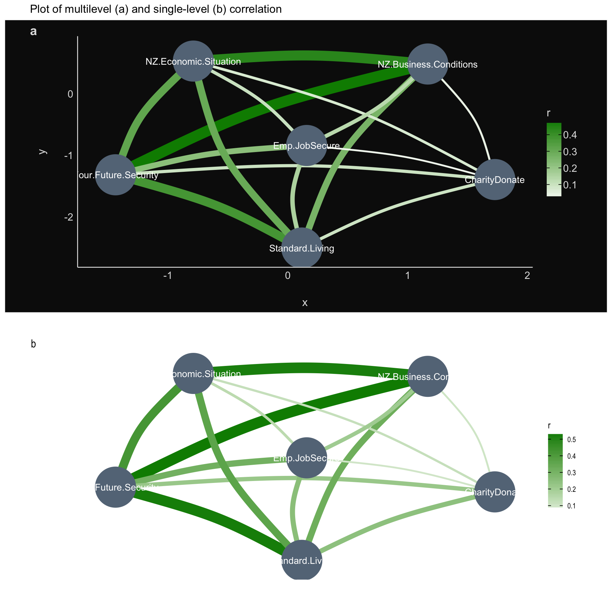
We can see an even greater correlations between the variables. This is because the model does not adjust for the repeated measures, which create dependencies in the data.
The report package
The reports package from the easystats group is powerful tool for saving tame. Before extolling its virtues, I’d like to point out two major limitations.
First, the package is in development. Currently, it has lots of bugs.
Second, the package uses terminology that won’t work for all contexts and purposes. For example, it uses the term “significant” to describe p values that are below the traditional p = .05 threshold.
If you learn nothing else from this course, you should learn never to use “significant” to describe a p value. You may, if you like, use “statistically signficant” however it would be better altogether if you simply dropped p-values from data analysis. We’ll show you how. With those provisos in mind, consider some useful functionality from the report package.
# create a demographic dataframe
nz_demagraphics <- nz %>%
select(Age, GenCohort, Male, Edu, Pol.Orient, Relid, BigDoms, Wave)
# now a nice way to save you time when reporting
paste(
report::report_participants(
nz_demagraphics,
group = "Wave",
age = "Age",
sex = "Male",
education = "Edu",
spell_n = TRUE),
"were recruited in the study by through enticement by lollipops. Those who did not volunteer were coerced."
)
[1] "For the 'Wave - 2018' group: Two Thousand, Sixty Eight participants (Mean age = 50.1, SD = 13.5, range: [18, 90]; 0.0% females; Mean education = 5.4, SD = 2.8, range: [0, 10]) and for the 'Wave - 2019' group: Two Thousand, Sixty Eight participants (Mean age = 51.8, SD = 13.4, range: [19.6, 91.08]; 0.0% females; Mean education = 5.6, SD = 2.7, range: [0, 10]) were recruited in the study by through enticement by lollipops. Those who did not volunteer were coerced."The table function of report isn’t great yet. However it has some nice features. For example you should always report your session information, and doing so in tabluar form clarifies the elements
Try running the following code on your own:
r <- report_table(sessionInfo())
r
Here is another method, which you can try on your own
Here’s a demographic table (try on your own)
report_table(nz_demagraphics)
Here’s a data summary
library("report")
nz %>%
group_by(Wave)%>%
select(
"Wave",
"Age",
"Male",
"Edu",
"Relid",
"Pol.Orient",
"KESSLER6sum",
"FeelHopeless",
"FeelDepressed",
"FeelRestless",
"EverythingIsEffort",
"FeelWorthless",
"FeelNervous"
)%>%
report() %>%
summary()
The data contains 4136 observations, grouped by Wave, of the following variables:
- 2018 (n = 2068):
- Age: Mean = 50.07, SD = 13.49, range: [18, 90]
- Male: 2 levels, namely Male (n = 772), Not_Male (n = 1290) and missing (n = 6)
- Edu: Mean = 5.39, SD = 2.78, range: [0, 10], 3.87% missing
- Relid: Mean = 1.67, SD = 2.57, range: [0, 7], 2.13% missing
- Pol.Orient: Mean = 3.53, SD = 1.39, range: [1, 7], 5.61% missing
- KESSLER6sum: Mean = 5.07, SD = 3.93, range: [0, 23], 0.73% missing
- FeelHopeless: 5 levels, namely None Of The Time (n = 1046), A Little Of The Time (n = 600), Some Of The Time (n = 338), Most Of The Time (n = 54), All Of The Time (n = 4) and missing (n = 26)
- FeelDepressed: 5 levels, namely None Of The Time (n = 1469), A Little Of The Time (n = 361), Some Of The Time (n = 170), Most Of The Time (n = 43), All Of The Time (n = 5) and missing (n = 20)
- FeelRestless: 5 levels, namely None Of The Time (n = 535), A Little Of The Time (n = 763), Some Of The Time (n = 594), Most Of The Time (n = 138), All Of The Time (n = 16) and missing (n = 22)
- EverythingIsEffort: 5 levels, namely None Of The Time (n = 551), A Little Of The Time (n = 795), Some Of The Time (n = 501), Most Of The Time (n = 158), All Of The Time (n = 40) and missing (n = 23)
- FeelWorthless: 5 levels, namely None Of The Time (n = 1433), A Little Of The Time (n = 356), Some Of The Time (n = 186), Most Of The Time (n = 67), All Of The Time (n = 7) and missing (n = 19)
- FeelNervous: 5 levels, namely None Of The Time (n = 620), A Little Of The Time (n = 789), Some Of The Time (n = 482), Most Of The Time (n = 146), All Of The Time (n = 13) and missing (n = 18)
- 2019 (n = 2068):
- Age: Mean = 51.83, SD = 13.45, range: [19.55, 91.08]
- Male: 2 levels, namely Male (n = 772), Not_Male (n = 1289) and missing (n = 7)
- Edu: Mean = 5.64, SD = 2.72, range: [0, 10], 3.14% missing
- Relid: Mean = 1.53, SD = 2.56, range: [0, 7], 4.79% missing
- Pol.Orient: Mean = 3.57, SD = 1.37, range: [1, 7], 3.05% missing
- KESSLER6sum: Mean = 5.20, SD = 4.01, range: [0, 22], 0.82% missing
- FeelHopeless: 5 levels, namely None Of The Time (n = 977), A Little Of The Time (n = 639), Some Of The Time (n = 349), Most Of The Time (n = 79), All Of The Time (n = 4) and missing (n = 20)
- FeelDepressed: 5 levels, namely None Of The Time (n = 1434), A Little Of The Time (n = 377), Some Of The Time (n = 193), Most Of The Time (n = 35), All Of The Time (n = 5) and missing (n = 24)
- FeelRestless: 5 levels, namely None Of The Time (n = 517), A Little Of The Time (n = 757), Some Of The Time (n = 608), Most Of The Time (n = 146), All Of The Time (n = 15) and missing (n = 25)
- EverythingIsEffort: 5 levels, namely None Of The Time (n = 544), A Little Of The Time (n = 804), Some Of The Time (n = 502), Most Of The Time (n = 156), All Of The Time (n = 35) and missing (n = 27)
- FeelWorthless: 5 levels, namely None Of The Time (n = 1407), A Little Of The Time (n = 375), Some Of The Time (n = 195), Most Of The Time (n = 60), All Of The Time (n = 9) and missing (n = 22)
- FeelNervous: 5 levels, namely None Of The Time (n = 568), A Little Of The Time (n = 850), Some Of The Time (n = 468), Most Of The Time (n = 133), All Of The Time (n = 24) and missing (n = 25)Notes:
More about the report package: here
This package is brought to you by easystats
Measures
When reporting your study, it is extremely important to include information about your measure. For example:
We measure psychological distress using the Kessler-6 scale (R. C. Kessler et al. 2002), which exhibits strong diagnostic concordance for moderate and severe psychological distress in large, cross-cultural samples Prochaska et al. (2012). Participants rated during the past 30 days, how often did… (a) “\(\dots\) you feel hopeless”; (b) “\(\dots\) you feel so depressed that nothing could cheer you up”; (c) \(\dots\) you feel restless or fidgety”; (d)“\(\dots\) you feel that everything was an effort”; (e) “\(\dots\) you feel worthless”; (f) “\(\dots\) you feel nervous?” Ordinal response alternatives for the Kessler-6 are: “None of the time”; “A little of the time”; “Some of the time”; “Most of the time”; “All of the time.”
We report sample descriptive statistics for indicators of personal Kessler-6 distress below in Table1.
Table 1library(gtsummary)
tb1 <-nz %>%
dplyr::select(
KESSLER6sum,
FeelHopeless,
FeelDepressed,
FeelRestless,
EverythingIsEffort,
FeelWorthless,
FeelNervous,
Wave,
) %>%
gtsummary::tbl_summary(
by = Wave,
statistic = list(
all_continuous() ~ "{mean} ({sd})",
all_categorical() ~ "{n} / {N} ({p}%)"
),
digits = all_continuous() ~ 2,
missing_text = "(Missing)"
)%>%
bold_labels()
tb1
| Characteristic | 2018, N = 2,0681 | 2019, N = 2,0681 |
|---|---|---|
| KESSLER6sum | 5.07 (3.93) | 5.20 (4.01) |
| (Missing) | 15 | 17 |
| FeelHopeless | ||
| None Of The Time | 1,046 / 2,042 (51%) | 977 / 2,048 (48%) |
| A Little Of The Time | 600 / 2,042 (29%) | 639 / 2,048 (31%) |
| Some Of The Time | 338 / 2,042 (17%) | 349 / 2,048 (17%) |
| Most Of The Time | 54 / 2,042 (2.6%) | 79 / 2,048 (3.9%) |
| All Of The Time | 4 / 2,042 (0.2%) | 4 / 2,048 (0.2%) |
| (Missing) | 26 | 20 |
| FeelDepressed | ||
| None Of The Time | 1,469 / 2,048 (72%) | 1,434 / 2,044 (70%) |
| A Little Of The Time | 361 / 2,048 (18%) | 377 / 2,044 (18%) |
| Some Of The Time | 170 / 2,048 (8.3%) | 193 / 2,044 (9.4%) |
| Most Of The Time | 43 / 2,048 (2.1%) | 35 / 2,044 (1.7%) |
| All Of The Time | 5 / 2,048 (0.2%) | 5 / 2,044 (0.2%) |
| (Missing) | 20 | 24 |
| FeelRestless | ||
| None Of The Time | 535 / 2,046 (26%) | 517 / 2,043 (25%) |
| A Little Of The Time | 763 / 2,046 (37%) | 757 / 2,043 (37%) |
| Some Of The Time | 594 / 2,046 (29%) | 608 / 2,043 (30%) |
| Most Of The Time | 138 / 2,046 (6.7%) | 146 / 2,043 (7.1%) |
| All Of The Time | 16 / 2,046 (0.8%) | 15 / 2,043 (0.7%) |
| (Missing) | 22 | 25 |
| EverythingIsEffort | ||
| None Of The Time | 551 / 2,045 (27%) | 544 / 2,041 (27%) |
| A Little Of The Time | 795 / 2,045 (39%) | 804 / 2,041 (39%) |
| Some Of The Time | 501 / 2,045 (24%) | 502 / 2,041 (25%) |
| Most Of The Time | 158 / 2,045 (7.7%) | 156 / 2,041 (7.6%) |
| All Of The Time | 40 / 2,045 (2.0%) | 35 / 2,041 (1.7%) |
| (Missing) | 23 | 27 |
| FeelWorthless | ||
| None Of The Time | 1,433 / 2,049 (70%) | 1,407 / 2,046 (69%) |
| A Little Of The Time | 356 / 2,049 (17%) | 375 / 2,046 (18%) |
| Some Of The Time | 186 / 2,049 (9.1%) | 195 / 2,046 (9.5%) |
| Most Of The Time | 67 / 2,049 (3.3%) | 60 / 2,046 (2.9%) |
| All Of The Time | 7 / 2,049 (0.3%) | 9 / 2,046 (0.4%) |
| (Missing) | 19 | 22 |
| FeelNervous | ||
| None Of The Time | 620 / 2,050 (30%) | 568 / 2,043 (28%) |
| A Little Of The Time | 789 / 2,050 (38%) | 850 / 2,043 (42%) |
| Some Of The Time | 482 / 2,050 (24%) | 468 / 2,043 (23%) |
| Most Of The Time | 146 / 2,050 (7.1%) | 133 / 2,043 (6.5%) |
| All Of The Time | 13 / 2,050 (0.6%) | 24 / 2,043 (1.2%) |
| (Missing) | 18 | 25 |
|
1
Mean (SD); n / N (%)
|
||
Note that you can use the gtsummary package to create in-line referencing. For example: Average Kessler-6 distress in 2018 was 5.07 (3.93) and in 2019 was 5.20 (4.01).
Order of your Method section
The following is a brief guide to describing your method. We’ll be returning to report writing in future weeks. For now, I just want to put this on the table for you. The advice is just a guide.
| Heading | Include |
| Participants |
|
| Materials |
|
| Procedure |
|
Below are the sampling procedures from the New Zealand Attitudes and Values Study, from where the nz teaching dataset was drawn.
Appendix 1A Sampling Procedure – NZAVS Time 10 (2018; conducted from 18.06.2018-28.09.2019)
The Time 10 (2018) NZAVS contained responses from 47,951 participants (18,010 retained from one or more previous wave. The sample retained 2,964 participants from the Time 1 (2009) sample (a retention rate of 45.5%). The sample retained 14,049 participants from Time 9 (2017; a retention rate of 82.3% from the previous year). Participants who provided an email address were first emailed and invited to complete an online version if they preferred. Participants who did not complete the online version (or did not provide an email) were then posted a copy of the questionnaire, with a second postal follow-up two months later. We staggered the time of contact, so that participants who had completed the previous wave were contacted approximately one year after they last completed the questionnaire. We offered a prize draw for participation (five draws each for $1000 grocery vouchers, $5000 total prize pool). All participants were posted a Season’s Greetings card from the NZAVS research team and informed that they had been automatically entered into a bonus seasonal grocery voucher prize draw. Participants were also emailed an eight-page newsletter about the study.
To boost sample size and increase sample diversity for subsequent waves, a booster sample was conducted by selecting people from the New Zealand electoral roll. As with previous booster samples, sampling was conducted without replacement (i.e., people included in previous sample frames were identified and removed from the 2018 roll). The sample frame consisted of 325,000 people aged from 18-65 randomly selected from the 2018 New Zealand Electoral Roll, who were currently residing in New Zealand (one can be registered to vote in New Zealand but living overseas). The electoral roll contained ~3,250,000 registered voters. The New Zealand Electoral Roll contains participants’ date of birth (within a one-year window), and we limited our frame to people who 65 or younger, due to our aim of retaining participants longitudinally. We concurrently advertised the survey on Facebook via a $5000 paid promotion of a link to a YouTube video describing the NZAVS and the large booster sample we were conducting. The advertisement targeted men and women aged 18-65+ who lived in New Zealand and ran for 14 days. This paid promotion reached 147,296 people, with 4,721 link clicks (i.e., clicking to watch the video), according to Facebook. The goal of the paid promotion was twofold: (a) to increase name recognition of the NZAVS during the period in which questionnaires were being posted, and (b) to help improve retention by potentially reaching previous participants who happened to see the advertisement. A total of 29,293 participants who were contained in our sample frame completed the questionnaire (response rate = 9.2% when adjusting for the 98.2% accuracy of the 2018 electoral roll). A further 648 participants completed the questionnaire, but were unable to be matched to our sample frame (for example, due to a lack of contact information) or were unsolicited opt-ins. Informal analysis indicates that unsolicited opt-ins were often the partners of existing participants.
Appendix 1B Sampling Procedure – NZAVS Time 11 (2019; conducted from 29.09.2019-17.10.2020)
The Time 11 wave was conducted during COVID-19 pandemic. Procedures thus differed in that there was an increased focus on online deliver using email reminders and extensive Facebook advertising, no Christmas card, and incomplete phoning of non-respondents.
The Time 11 (2019) NZAVS contained responses from 42,684 participants (36,522 retained from one or more previous wave. The sample retained 2,506 participants from the Time 1 (2009) sample (a retention rate of 38.4%). The sample retained 34,782 participants from Time 10 (2018; a retention rate of 72.5% from the previous year). Participants who provided an email address were first emailed and invited to complete an online version if they preferred. Participants who did not complete the online version (or did not provide an email) were then posted a copy of the questionnaire, with a second postal follow-up two months later. We staggered the time of contact, so that participants who had completed the previous wave were contacted approximately one year after they last completed the questionnaire. A second reminder email was sent approximately four months following the first email attempt. We offered a prize draw for participation (five draws each for $1000 grocery vouchers, $5000 total prize pool). Participants were also emailed an eight-page newsletter about the study. As in past years, three attempts were made to phone non-respondents using each available cell and landline number. However, due to the university closure during COVID-19 lockdowns, phoning attempts were made for only 54% of the phoning pool (11,687 from a total of 21,636 non-respondents who provided at least one phone number).
Two additional forms of recruitment were also introduced during Time 11. The first was a large information box in the questionnaire (taking a full page on the paper version), which asked people: ‘Do you have a partner who would also like to join the NZAVS?’ with additional details for how partners might join the study (see questionnaire for the full text). The second was a Facebook advertisement. The advertisement targeted men and women aged 18-65+ who lived in New Zealand and ran from and 4th April 2020 – 4th July 2020 (overlapping with New Zeeland’s first lockdown period and recovery), and again from 18th August 2020 – 4th September (during the second Auckland lockdown). Given the unprecedented nature of the COVID-19 lockdowns, we thought it important to maximise sampling during these periods. The goal of the Facebook advertisement was threefold: (a) to increase name recognition of the NZAVS and remind people to complete the paper/online version already posted/emailed to them, (b) to help improve retention by potentially reaching previous lost participants who happened to see the advertisement, and (c) to recruit new participants (and also the partners of existing participants) while people were at home with some possibly having more free time during lockdown. This last goal was indirect and not explicitly stated it in the advertisement.
The Facebook advertisement read as follows: “Participate in the New Zealand Attitudes and Values Study. Complete the 2020 Questionnaire online” with the body of text: “If you are part of the NZAVS, but have not heard from us in the last year, then please consider completing the 2020 questionnaire online. The study is more important than ever as we aim to understand the impact of COVID-19 on mental health, wellbeing and resilience in our communities. We wish you all the best at this time and hope you keep well and stay safe.” This paid promotion reached 883,969 people, with 37,850 link clicks (i.e., clicking the link for the Qualtrics survey) according to Facebook. A total of 6106 people continued complete the questionnaire and provide full contact details, and were thus included in the dataset (4734 were new participants opting in to the study, and 1372 were previously ‘lost’ participants).
Appendix 2 Johannes’s mini-lecture on the papaja package
Appendix 3 Style advice about research methods
APA style advice here
Notice, the intercept here is zero. This because we centered the new indicator at zero, and we wrote a model that is estimating the population average for this outcome (an intercept-only model). Don’t worry if you don’t know what an intercept is, we’ll get to regression in a few weeks.↩︎